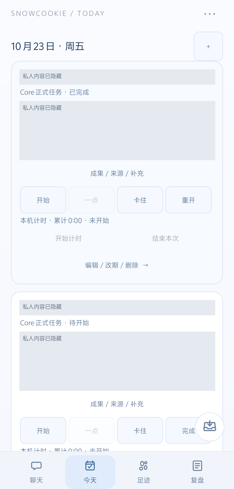

个人 Agent 工作台 ／ 从 HMC 到日常入口
聊过的事，接着做。
给自己的 AI 搭档做一套日常入口。
不只聊完，也留下能继续的事。
Android App 把聊天、任务、收藏和复盘放在一起，Core 负责保存与连接 Agent。小组件让投递更顺手，Windows 桌宠则把陪伴留在屏幕边缘。
看一件事怎样留下来
私人标题与说明已遮挡。
把日常操作放在一起
手机实机App 承接聊天、任务、收藏和复盘。需要做事时，不必先翻回一段聊天。
A SMALL, REAL FRICTION“真正要做事时，
我不想又从翻聊天开始。”
以前的 HMC 主要记录不同 Agent 的工作状态。使用重心转到手机后，我更需要打开就能操作的任务卡、随手保存的入口，以及一天结束后能找回的结果。于是，记录层留在后台，日常动作被搬到了 App 里。
想做的先放着，今天的自己选。
项目池保留未排期的事；今天页只看当天安排。开始、卡住、完成都来自操作与确认，不再靠一次聊天结束时猜任务进展。
- 01 / POOL项目池
- 02 / TODAY今天
- 03 / DOING进行中
- 04 / DONE完成
- 05 / REVIEW复盘
整理项目截图
挑选能说明任务操作的界面，整理到项目页。
先记住，不急着承诺。
未排日期的任务留在项目池。真正决定今天处理时，再排日期；它不会因为在聊天里被提到，就自动挤进今天的清单。
演示会停在需要确认的地方，不替你把想法变成当天承诺。
收藏资料，是另一件事。
手机小组件可以直接打开投递入口，先存一段话或一个链接。保存只是把资料留下；要采取行动时，再明确做什么、是否排日期。
先投递，不强迫立即选项目。
素材留下来
今天的任务不增加。
决定后续动作 ≠ 保存资料做完在哪天，就在哪天找。
周二计划的事，可能周三才做完。计划日期保留原来的安排，实际完成日期决定成果从哪里回看；不再为了补一天的记录，复制另一张任务卡。
没有这张卡
原计划留在字段里
DEMO-01 / 同一个任务整理项目截图实际完成 · 周三
按计划看时不在这里
复盘不只看“完成”。
完成、有推进、卡住和待处理放在一起，才知道今天发生了什么。下一天先是一份可修改的草案，昨天没做完的事不会直接变成今天的新债。
有使用记录 ≠ 在工作。重叠与未知时段仍需结合具体事情判断。
今天页，直接处理任务。
本人手机的真实任务卡，显示已完成与待开始状态，以及任务操作和本机计时入口。私人标题与说明已遮挡；未为截图新增或改写任务。
ANDROID / TODAY · 2026-10-23 · 已脱敏完成之后，按实际日期回看。
真实周计划局部：原计划 10 月 13 日、实际完成 10 月 20 日的同一张卡，出现在 20 日下，原计划仍保留。私人标题已遮挡；上方周二到周三为独立机制示意。
ANDROID / PLANNER · 2026-10-23 · 已脱敏局部手机负责好用，后台负责接上。
Core 是中间服务：统一保存任务、素材与执行记录，再连接现有 Agent 能力。HMC 继续保留历史与完成档案，逐渐退出日常计划管理。
Core
统一保存，连接运行
任务由 App 操作并交给 Core 保存；完成档案继续留在 HMC。一次完成操作与后续档案确认分别反馈，不把它们混成一个状态。
同步失败，不等于白做了。
任务已完成，档案确认却可能还没回来。两者分开显示；失败时保留身份与状态，重试仍沿用原记录，不让一次操作变成多份任务。
DEMO-01任务数量：1失败演示只改变档案确认状态，左侧任务不会变回“未完成”。
实现到哪一步了？
手机经 Core 调用 Agent 并取回回复、保留运行身份、重新打开 App 后回查结果，这条基础链路已经跑通。继续整理的是更自然的委托与运行页：主聊天继续，独立工作会话推进，再接回有来源的结果。
我具体负责什么？
先确定使用场景、对象与交互规则，再借助 AI Agent 推进开发、部署和验收。除了测试结果，还结合代码、接口读回与真机操作，检查旧记录、草稿和任务在升级后是否保留。
工具之外，还想有个搭档。
我给这个搭档取名“雪饼”。Windows 桌宠可以贴边、被戳、拎起、放下和摸摸，也有行走、睡觉与免打扰状态。不打开完整界面，它也能在场。
贴在屏幕边缘，不占一个新的工作窗口。点一下雪饼，试试戳戳。
网页交互示意 · 使用原生角色素材，非 Windows 运行截图
先让角色在场，
再接真正的工作状态。
这部分保留了工具之外的使用理由：我希望电脑上不只是多一个待办窗口，也有一个愿意靠近、又不会一直打断我的小角色。
左侧使用桌宠原生角色素材，演示贴边、位置切换与轻触反馈；不是 Windows 实机运行画面。
后续接入 通过桥接层把 Core 的任务与执行回执转成轻提醒或角色反馈；有效期、重复播放和免打扰规则沿用已有协议。
少解释一遍，
多留下一点能继续的东西。